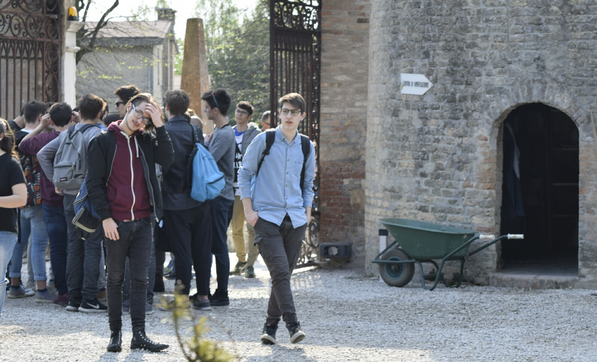

Siamo Niccolò Serafino e Daniele Napolitano, studenti dell'attuale 3aD
della scuola Blaise Pascal sezione informatica.

Questo sito è stato creato per documentare il nostro percorso individuale riguardo il progetto
di alternanza scuola-lavoro effettuata tra il 2015 e il 2019
Vogliamo che il nostro progetto risulti semplice ad un primo impatto visivo.
Per questo abbiamo utilizzato colori accesi
e abbiamo dato alla pagina una struttura minimalista.
portfolio di Napolitano Daniele